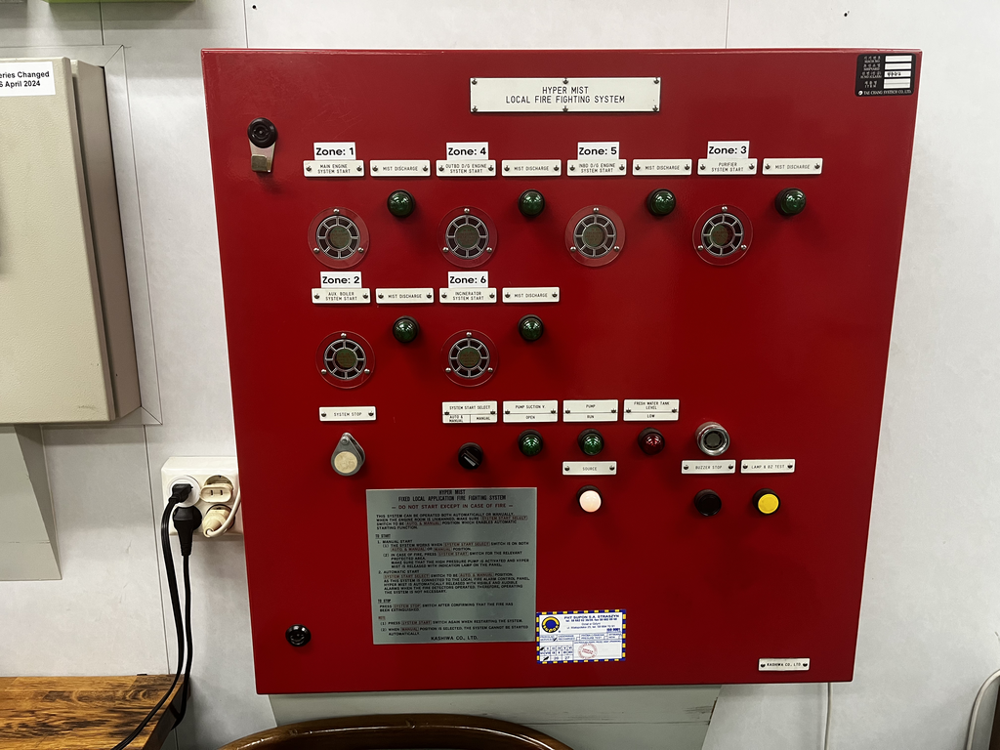

Part 1: Emergency Rules and Safety Equipment (All Vessels)
- List and describe the fire-fighting equipment found in your ship’s machinery spaces.
The fire-fighting equipment in the ship’s machinery spaces included the \(CO_2\) fixed fire fighting system, the Hyper Mist pressurized water deluge system, fire hoses with the optional addition of aqueous film-forming foam (AFFF) and fire extinguishers. The fixed \(CO_2\) system was installed throughout the main engine room and main switchboard room with nozzles preferentially placed around equipment such as the main engine, boilers, and purifiers. The Hyper Mist pressurized water deluge system would create a fog of high pressure water mist in localized zones in the engine room. Fire hoses were placed strategically in locations of higher fire risk, including the auxiliary boiler, diesel generators and main engine. Some locations had AFFF trunks which had jugs of foam concentrate and an applicator. The applicator would connect up to the standard fire hose attachment and draw concentrate from the jugs using an ejector. The main engine room, diesel generator room and machine shop all contained dry chemical fire extinguishers (class ABC). Rooms which contained electrical equipment such as the engine control room (ECR) and the main switchboard room had \(CO_2\) fire extinguishers installed.
- What type of fire extinguishers were located in the machinery spaces? What class of fires are they capable of extinguishing? Explain their proper operation, coverage, and maintenance requirements.
Dry chemical fire extinguishers (class ABC) were the primary type of fire extinguisher found within the machinery spaces of the ARC Independence. They are capable of extinguishing solid combustibles (class A), flammable liquids like lube and fuel oil (class B), and electrical fires (class C). Portable fire extinguishers were to be weighed monthly by the 3/M and inspected at least every two years. Maintenance is minimal and included refilling or replacing the extinguishers if they were used.
- What type of fixed fire extinguishing systems are installed? Describe the system and explain its operation, protected areas, and maintenance requirements.
There were two main fixed fire extinguishing systems aboard the M/V ARC Independence, the Hyper Mist and the \(CO_2\) inert gas fire fighting systems. The Hyper Mist is a localized high-pressure water mist deluge system that releases droplets of water over protected zones in the engine room. The zones included the main engine, one; the auxiliary boiler, two; the purifier room, three; the outboard and inboard ship service diesel generators, four and five, respectively; and the incinerator room, zone six. This system could be operated manually from a console in the engine room, the bridge or fire locker A. The \(CO_2\) inert gas system was installed to protect machinery spaces and all thirteen levels of the cargo decks. A room on the aft upper deck contained two large cylinders of pressurized \(CO_2\). The system could be operated by using the controls mounted in either fire locker A (fire control room) or locally in the fixed fire fighting system at the tanks on the upper deck.
Maintenance for the Hyper Mist was mostly limited to shipyard periods and included certification of the system using a pressure test, testing the functionality of the system pump and zone sensor testing. Each of the zones contained two sensors and the system would only be alarmed if both sensors were triggered. The two sensors for each zone included a flame eye and a smoke detector, that way if equipment was behaving in such a way that emulated properties of a fire (like an exhaust leak), the system would not be triggered and make a mess in the engine room. Local in-house testing by the engineers did occur and included manually triggering the sensor pair for one zone a month. That zone rotated such that each zone was tested twice yearly. The lamps and buzzers were tested on the Hyper Mist system weekly.

Maintenance for the fixed \(CO_2\) system involved regularly checking the tank levels on the upper deck. While I was onboard, it also involved replacing the \(CO_2\) detection sensor (for leaks) within the \(CO_2\) room as it had failed. The majority of the maintenance was not in the purview of the the operating engineers. Whenever the ship was recertified by Lloyd’s Register, the classification society, the company would have technicians come onto the vessel and exercise the valves for the fixed CO_2 system. According to the first engineer, the CO_2 system would be blocked off from the tanks and the system would be triggered in all zones, and the alarms would be tested. However, this testing did not occur while I was onboard and the maintenance manual for this equipment was no longer in the engine room. Regardless, the only maintenance that the operating engineers would conduct would be to maintain the refrigeration system cooling the tanks for the CO_2 tanks as needed.
Additionally, there was a localized fire fighting system for the deep fryer in the galley. The system was an Ansul R-102 Restaurant Fire Suppression System. The system was operated by a metal control box just adjacent to the protected cooking hood. When activated, a pressurized \(CO_2\) cylinder would disperse a canister of Ansulex Low pH Fire Suppressant compound, a potassium-based class-K extinguisher, over the affected fryer. This system was relatively low-maintenance and involved regreasing the mechanical components, and checking the weight of the CO_2 and fire suppressant once every two years. Every 12 years, in addition to the 2-year requirements, the CO_2 tank and fire suppressant chemical should both be replaced, regardless of their conditions.
- What are the USCG regulations regarding boat and fire drill? Provide the CFR Reference. What were your assigned duties for Fire AND Boat Drills? What were the instructions you received at your boat station?
US Coast Guard regulations concerning safety drills are listed under CFR 46 § 199.180 Training and drills. It indicates that “Every crewmember must participate in at least one abandon-ship drill and one fire drill every month,” and that a drill “must take place within 24 hours of the vessel leaving a port if more than 25 percent of the crew have not participated in abandon-ship and fire drills on board.” From subsection d, abandon-ship drills, boat drills must include mustering everyone at their muster stations, the use of the general alarm and relevant PA system, ensuring that everyone is properly dressed, correct donning of life jackets and immersion suits, the lowering of at least one lifeboat, starting of the lifeboat engine and the operation of davits used for launching the life rafts. From subsection f, fire drills must include reporting to muster stations, starting of the fire pumps and the use of at least two hoses (jets) to determine that the system is working, inspection of the proper donning of turnout gear, checking communication equipment, ensuring the proper operation of watertight doors, fire doors and fire dampers, and checking for the proper arrangements for a subsequent abandonment of the vessel. I did not have any specific duties for fire or boat drills beyond “assist as directed.” Despite being an engineer, I was instructed to muster at the bridge for both fire and boat drills. At my boat station, we were instructed to don life jackets and muster was taken. Then we went to a safety meeting after muster was conducted.
- What action is taken by the engineers in the engine room during a fire (drill or actual) AND Boat Drill? List the duties of all the engineers (QMED, 3rd, 2nd, First, Chief)
In the event of a fire on the vessel, the engineers would power up the emergency fire pumps and monitor the fire alarms (but not suppress them). In the event that the fire is within the engine room, they would ensure that the corresponding zone for the Hyper Mist system was engaged and suppressing the fire. Additionally, if the fire was being fed by a specific electrical or fuel system, they would attempt to cut fuel to that system after first consulting the bridge.
In a fire, the responsibility of the Chief Engineer would be to suppress engine room fires and command fire fighting operations pertaining to the engine room. The First Engineer is responsible for securing electricity and ventilation to whatever space has the fire. The Second Engineer was on the fire response team for the engine room and would respond to the fire. The Third Engineer was on fire team B and would respond to fires outside of the engine room. We did not have any QMEDs on the vessel, but the oilers would join the fire teams.
During a boat drill, the Chief Engineer would prepare the lifeboat to launch and would operate the lowering gear. The First Engineer would disconnect the battery charging cable and release the gripes. The Second and Third Engineers would start the lifeboat engine.
- What type of breathing apparatus was used on the vessel? Where was it stored?
Our ship had MSA-brand SCBA that was stored in both fire rooms A and B, and the engine control room. There were also emergency escape breathing devices (EEBDs) placed throughout the machinery spaces, including ECR, steering gear, the generator room, and shaft alley among other locations throughout the main engine room.
- List and describe the safety equipment you received instructions about.
I received instruction on life jackets, fire extinguishers, fire hoses, the life boat and immersion suits while aboard the ARC Independence. For life jackets and immersion suits, I was instructed on how to don them during a fire and boat drill. With regards to fire extinguishers, I was reminded of the types of fire extinguishers available, where to locate them and the “Pull-Aim-Squeeze-Sweep” technique for fighting fires. The life boat was really the only piece of equipment that I was previously unfamiliar with because this ship had a free-fall davit. In this life boat, the seats were facing backwards, which the third mate explained was to minimize whiplash.
- What procedure should be followed if smoke starts coming from the vents of an electric motor?
If smoke starts coming out of the vents of an electric motor, it is important to first consider whether or not this motor is tied to a critical system, the operating conditions of the vessel and whether or not there is any redundancy to the motor. It would not be safe to denergize a smoking motor tied to the steering gear system in the case of maneuvering. So, if possible, the components for a secondary motor should be lined up and powered on before de-energizing the smoking motor as quickly as possible. On my vessel, I was instructed to first warn a licensed engineer if a motor was smoking and to only de-energize the motor if there were visible flames. After de-energizing, a dry chemical or \(CO_2\) fire extinguisher might be used to extinguish the flames as these types of fire extinguishers are safe for use on electrical fires.
- What precautions would you take to prevent fires in the engine room?
In order to prevent fires in the engine room, there are many steps that can be taken to minimize fire risk. Keeping equipment, especially those that carry flammable materials (fuel lines, lube oil lines, etc.), in working order helps to minimize the risk of fire from the propagation of flammable materials into an ignition source like a steam line or a fluorescent light. Additionally, keeping walkways, bilges and all spaces clear of flammable materials helps to minimize their ignition in the event of some ignition source. To minimize the presence of an ignition source in locations where flammable gas vapors might be present, crew members should use intrinsically safe tools and avoid items that cause a spark like smoking or using a lighter. Additionally, regular testing for flammable vapors should be done in locations where they are likely and oily rags should not be left in the open and instead should be placed in metal “oily waste” containment bins. Another key preventative measure is to foster a safety culture among the members of the engineering department. That way, if someone sees a potential hazard for a fire, they will be more likely to either remedy it or bring it up to a higher-up.
- Where is the fixed fire extinguishing system storage room located? Where are its controls?
The \(CO_2\) fixed fire extinguishing system is located on the upper deck near the stern lifeboat aft of the helipad. It can be controlled locally from a panel in the fixed fire extinguishing room or it can be activated in fire locker A, also known as the fire control room, which is on the port side aft of midship. The fixed fire extinguishing system for the galley was located locally as a tank by the hood for the fat fryer and its controls were outside of the galley. The Hyper Mist pump was located on the mid level of the engine room starboard side forward.
- In what condition should the bilge(s) be kept? Whose responsibility is it and who does the cleaning? How is bilge water handled while in port? While at sea?
The bilge should ideally be kept clean and dry. However, this is not really possible in practice, so it should be kept as free as possible of oil and other flammable materials to minimize the danger of fire. On my ship, the bilge was the responsibility of the third engineer but the oilers did the bilge cleaning. Bilge water cannot be discharged while in port and must be pumped down to a bilge holding tank. This holding tank may be pumped overboard at sea nce the contents are treated with the oily water separator (OWS) to an oil content of less than 15 ppm such that it will not create a sheen.
- List and describe the remote emergency apparatus installed for use with the main propulsion plant. (Shut-off valves, reach rods, vents, screens, fill lines, etc.)
The remote emergency apparatus installed for use with the main propulsion plant included electronic fuel oil shut off valves activated via the red emergency engine stop button in the ECR and the pneumatically actuated quick-closing valves that could be activated in fire locker A. The quick closing valves would immediately cut fuel to the engine; aux boiler and generators; or lube oil to the all of the above depending on which quick-closing zone was actuated. There was also an emergency stop button for the auxiliary boiler, the main engine, accommodation ventilation, cargo hold fans/ventilation and the diesel generators which could be activated from the bridge or ECR. The Hyper Mist fire suppression system and the \(CO_2\) fire suppression system could also be activated remotely from the fire control room.
- If there were any mechanical problems to these devices while you were onboard, please list and describe? What periodic maintenance or repair(s) was done to these devices?
No major mechanical issues occurred to these devices while onboard; however, the first engineer noted that the quick closing valve to the diesel generators leaked by a little bit when activated. The periodic maintenance to the quick closing valve consisted of actuating the valve regularly (every Sunday) and tightening the linkages. The ventilation dampers were actuated regularly (every Sunday) and when the first engineer noticed that they got stuck, ordered that they be regreased.
- What are the USCG regulations under which each of these emergency apparatuses are covered? List the articles.
Quick-closing valves are covered under 46 CFR § 56.50-60 which requires remotely operable valves to stop fuel flow in emergencies. 46 CFR § 56.20-15 states that the valves must be mechanically or pneumatically activated for safety purposes (such as the ship losing power). Emergency stop buttons are covered under 46 CFR § 62.35-50 which requires that propulsion and auxiliary machinery may be manually shutdown in the event of an emergency. 46 CFR § 52.01-105 outlines manual emergency shutdown for boilers.
- List and describe the types of fire and smoke detecting equipment fitted in the engine room and accommodation spaces. Explain why one type of detector is chosen over another for a particular application.
In the engine room, there were numerous detectors for various different zones. Certain zones had combination flame and smoke detectors and these were beneficial because they were highly resistant to false alarm and were thus used to trigger the fixed fire fighting system (water mist). Other zones had heat detectors because they were unlikely to elicit a false alarm when exposed to exhaust gases. In the accommodation spaces, smoke detectors were largely used because they are highly sensitive and would give an earlier warning than one of the combination measures. The major exception to this rule was the galley which used heat detectors instead of smoke detectors to avoid the false alarm from moisture from steam that might be created in the galley.
- How were each one of these types of detectors tested?
The flame eye detectors were tested by using a UV flashlight directed at the detector.

The smoke detectors were tested using a Testifire combination smoke and heat testing tool. To test one of the combination systems, you were able to trigger one detector at a time as the detector would stay alarmed even after the stimulus was removed. For the heat detectors in the galley, the Testifire tool is also used but this did not happen while I was onboard the vessel.

- What is meant by the term explosion proof? Provide examples of explosion proof equipment commonly found aboard ship.
Explosion proof equipment is that which is designed to contain an explosion within it without igniting a potentially explosive atmosphere around it. Some examples include engine room lighting, certain gas detectors, alarm bells and horns, and specific motors.
- What is meant by the term intrinsically safe? Provide examples of intrinsically safe equipment commonly found aboard ship.
Intrinsically safe devices are those which will not light off an explosive mixture. This means that a piece of electrical equipment will not arc or a piece of mechanical equipment will not generate enough heat to light an explosive gas mixture. Some examples of intrinsically safe equipment include Moonbeams, radios, smoke detectors, non-sparking hand tools, and many pneumatic tools. For a tool to be classified as intrinsically safe, it must be certified under UL 913 in the US or ATEX certified in Europe.
- Did the vessel experience a fire while you were on board? If so, briefly explain what happened, how it was handled, and what was done to prevent such fires in the future, or lessons learned.
Although a fire (unfortunately) did not occur during my time on the vessel, the engineers recounted some stories about times when fires did occur and describing the fear when it happened. The third used it as a learning experience for me to emphasize the correct way to handle a motor fire. First, he said to secure the motor, then grab the fire extinguisher and be sure to not allow the fire in the path of your escape or the alarm button.
- What would you do if you discovered a small fire below the deck plates? Explain your actions in fighting a fire in an engine room, up to and including using the fixed system. Be detailed and specific!
If I discovered a small fire below the deck plates, my first action would be to raise the alarm. If a phone was nearby, I would call ECR. If a pull station was closer, I would use that. Although the fire is small, I would much rather start the process for getting help down to the fire sooner before trying to fight the fire myself. That way, if the fire grows or I discover a larger fire and I’m overwhelmed, there will be people there to assist me. If the fire was below the deck plates, it would more than likely be a class B fire. As such, I would find a class ABC dry chemical or \(CO_2\) fire extinguisher and try to fight the fire from there. If that extinguisher was depleted and there was a hose station nearby and the fire was class A, I would use that. If the fire continues and likely contains liquid material, I would grab the aqueous film-forming foam applicator located on the first engine platform and use that on the fire after connecting it to the hose reel. If the fire is extinguished at any time, I would stay to watch to make sure the fire does not reignite. A fire is not out until it is cold and out. I would not use any of the fixed systems unless the fire was particularly intense. The water mist would be my first fixed system and would be activated from the panel inside of ECR. I would use this system because the implications of using this system are less significant than dropping the \(CO_2\) system as the engine room zone where the fire is located can be selected. If the water mist system is ineffective, my final recourse would be to activate the \(CO_2\) system (or rather, the Chief Engineer as he is the only one authorized to activate it). If this system were to be used, the entire engine room would need to be evacuated and sealed so a final muster would have to be taken outside of the engine room (likely at the lifeboat if this has become necessary) before the \(CO_2\) could be dropped from Fire Control Room A.
- List and describe the sequential process of lowering a lifeboat. Explain the lifeboat lowering gear. How is the speed of descent controlled on a lifeboat when it is being lowered?
On my vessel, we had a free fall lifeboat. First, after mustering everyone would board the lifeboat and would be strapped in. The hatch is closed and the drain plug would be inserted into the drain hole. After the charging cable was removed, the engine would be started and tested, if possible. The gripes would be removed. When the vessel is ready to launch, the officer in charge of the lifeboat is to pull the releasing lever until the lifeboat falls. The speed of descent on the lifeboat is controlled by the force of gravity and friction as the lifeboat slides down the rails. Our lifeboat also had a small centrifugal brake which would also slow the speed of the lifeboat launch as long as someone was still onboard the ship to control the speed of the lifeboat lowering.
- How many life rafts were installed on the vessel? What were their locations?
There were four life rafts installed on the vessel. They were located forward of midships on the upper deck level outside of the accommodation spaces with two of each on the port and starboard sides.
- Explain the purpose of a hydrostatic release used in conjunction with an inflatable life raft.
A hydrostatic release on an inflatable life raft will automatically release and inflate the life raft and cause it to float free of the vessel once it is submerged below the water. This is helpful in the event that someone was not able to free a life raft in time.
DRAWINGS - NONE